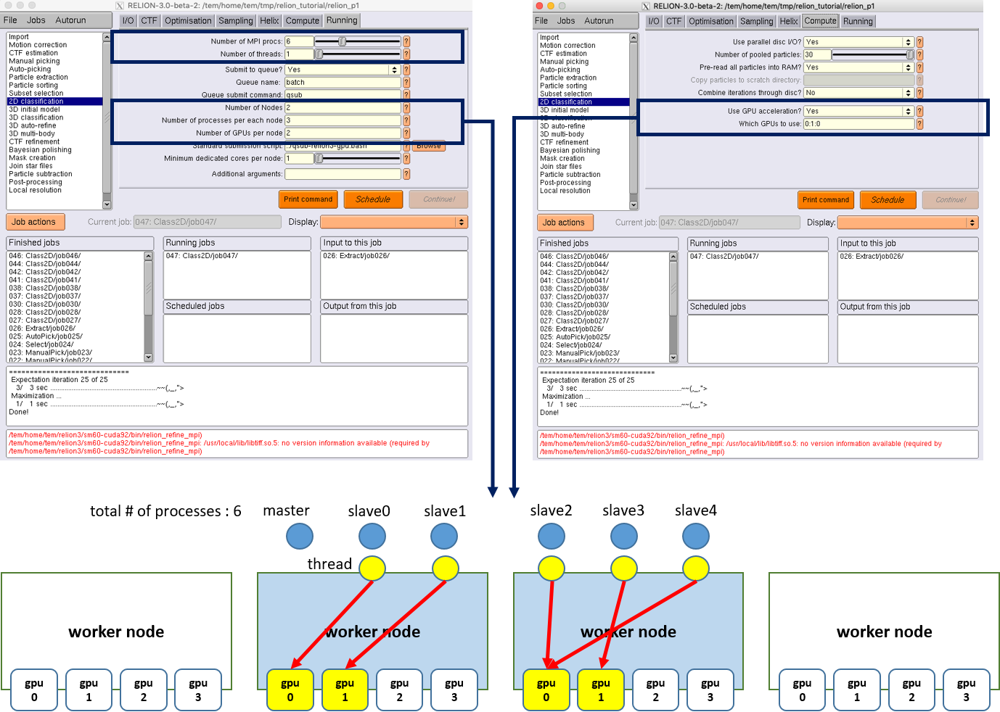

Relion
RELION (for REgularised LIkelihood OptimisatioN, pronounce rely-on) is a stand-alone computer program that employs an empirical Bayesian approach to refinement of (multiple) 3D reconstructions or 2D class averages in electron cryo-microscopy (cryo-EM). (from Relion official site https://www3.mrc-lmb.cam.ac.uk/relion/index.php?title=Main_Page)
Executing Relion GUI tools
How to start Relion data analysis tool
You can find out relion applications’ environment module path by listing all the module available on TEM service farm
$> module avail
-------- /tem/el7/Modules/apps --------
apps/cistem/1.0.0
apps/relion/cpu/3.0.7
apps/relion/cpu/3.1.0
apps/relion/cpu/4.0.0
apps/relion/gpu/3.0.7
apps/relion/gpu/3.1.0
apps/relion/gpu/4.0.0
---- /tem/el7/Modules/acceleration ----
cuda/9.2 cuda/11.2
-------- /tem/el7/Modules/mpi ---------
mpi/gcc/4.8.5/openmpi/4.0.3
mpi/gcc/8.3.1/mpich/3.4.3
mpi/gcc/8.3.1/openmpi/4.0.3
mpi/gcc/openmpi/4.0.3
----- /tem/el7/Modules/virtualenv -----
conda/2020.11 topaz/cuda-9.2/0.2.4
pyem/0.5 topaz/cuda-11.0/0.2.4
------- /tem/el7/Modules/tools --------
tools/aspera-cli/3.9.6
tools/ctffind/4.1.14
tools/gctf/1.18_b2
tools/motioncor2/1.3.1
tools/resmap/1.1.4
tools/summovie/1.0.2
tools/unblur/1.0.2
----- /tem/el7/Modules/experiment -----
PyRosetta/4
python/3.7
rosetta/mpich-3.4.3/3.13
rosetta/openmpi-4.0.3/3.13
Check the module details for the specific relion version (e.g., Relion v4.0.0 with GPGPU support or Relion v4.0.0 with CPU cores support only)
$> module show apps/relion/gpu/4.0.0
-------------------------------------------------------------------
/tem/el7/Modules/apps/apps/relion/gpu/4.0.0:
module-whatis {Setups relion 4.0.0 environment variables}
module load mpi/gcc/openmpi/4.0.3
module load cuda/11.2
setenv relion_version 4.0.0
prepend-path PATH /tem/el7/relion-4.0.0/gpu/bin
prepend-path LD_LIBRARY_PATH /tem/el7/relion-4.0.0/gpu/lib
setenv LANG en_US.UTF-8
setenv RELION_QUEUE_USE yes
setenv RELION_QUEUE_NAME gpuQ
setenv RELION_QSUB_COMMAND qsub
setenv RELION_QSUB_EXTRA_COUNT 3
setenv RELION_QSUB_EXTRA1 {Number of Nodes}
setenv RELION_QSUB_EXTRA2 {Number of processes per each node}
setenv RELION_QSUB_EXTRA3 {Number of GPUs per node}
setenv RELION_QSUB_EXTRA1_DEFAULT 1
setenv RELION_QSUB_EXTRA2_DEFAULT 3
setenv RELION_QSUB_EXTRA3_DEFAULT 2
setenv RELION_CTFFIND_EXECUTABLE /tem/el7/ctffind-4.1.14/bin/ctffind
setenv RELION_GCTF_EXECUTABLE /tem/el7/Gctf_v1.18_b2/bin/Gctf_v1.18_b2_sm60_cu9.2
setenv RELION_RESMAP_EXECUTABLE /tem/el7/ResMap-1.1.4/ResMap-1.1.4-linux64
setenv RELION_MOTIONCOR2_EXECUTABLE /tem/el7/MotionCor2_v1.3.1/MotionCor2_v1.3.1-Cuda92
setenv RELION_UNBLUR_EXECUTABLE /tem/el7/unblur_1.0.2/bin/unblur_openmp_7_17_15.exe
setenv RELION_SUMMOVIE_EXECUTABLE /tem/el7/summovie_1.0.2/bin/sum_movie_openmp_7_17_15.exe
conflict apps/relion
-------------------------------------------------------------------
or
$> module show apps/relion/cpu/4.0.0
-------------------------------------------------------------------
/tem/el7/Modules/apps/apps/relion/cpu/4.0.0:
module-whatis {Setups relion 4.0.0 environment variables}
module load mpi/gcc/openmpi/4.0.3
setenv relion_version 4.0.0
prepend-path PATH /tem/el7/relion-4.0.0/cpu/bin
prepend-path LD_LIBRARY_PATH /tem/el7/relion-4.0.0/cpu/lib
setenv LANG en_US.UTF-8
setenv RELION_QUEUE_USE yes
setenv RELION_QUEUE_NAME cpuQ
setenv RELION_QSUB_COMMAND qsub
setenv RELION_QSUB_EXTRA_COUNT 2
setenv RELION_QSUB_EXTRA1 {Number of Nodes}
setenv RELION_QSUB_EXTRA2 {Number of processes per each node}
setenv RELION_QSUB_EXTRA1_DEFAULT 2
setenv RELION_QSUB_EXTRA2_DEFAULT 16
setenv RELION_CTFFIND_EXECUTABLE /tem/el7/ctffind-4.1.14/bin/ctffind
setenv RELION_GCTF_EXECUTABLE /tem/el7/Gctf_v1.18_b2/bin/Gctf_v1.18_b2_sm60_cu9.2
setenv RELION_RESMAP_EXECUTABLE /tem/el7/ResMap-1.1.4/ResMap-1.1.4-linux64
setenv RELION_MOTIONCOR2_EXECUTABLE /tem/el7/MotionCor2_v1.3.1/MotionCor2_v1.3.1-Cuda92
setenv RELION_UNBLUR_EXECUTABLE /tem/el7/unblur_1.0.2/bin/unblur_openmp_7_17_15.exe
setenv RELION_SUMMOVIE_EXECUTABLE /tem/el7/summovie_1.0.2/bin/sum_movie_openmp_7_17_15.exe
conflict apps/relion
-------------------------------------------------------------------
Load the environment module for the version of relion application which you want to execute. As the module specified is loaded, all the modules with dependency are also loaded (you can check these modules with “module list” command)
$> module load apps/relion/gpu/4.0.0
$> module list
Currently Loaded Modulefiles:
1) mpi/gcc/openmpi/4.0.3 2) cuda/11.2 3) apps/relion/gpu/4.0.0
Check the relion application binary path
$> which relion
/tem/el7/relion-4.0.0/gpu/bin/relion
Execute the relion application (we assume that X11 forwarding is enabled)
$> relion
{kind=link}
PBS Strings used in Relion
String |
Variable type |
Description |
XXXcommandXXX |
string |
relion command + arguments |
XXXqueueXXX |
string |
Name of the queue to submit job to |
XXXmpinodesXXX |
integer |
The number of MPI processes to use |
XXXthreadsXXX |
integer |
The number of threads to use on each MPI process |
XXXcoresXXX |
integer |
The number of MPI processes times the number of threads |
XXXdedicatedXXX |
integer |
The minimum number of cores on each node (use this to fill entire nodes) |
XXXnodesXXX |
integer |
The total number of nodes to be requested |
XXXextra1XXX |
string |
Installation-specific |
XXXextra2XXX |
string |
Installation-specific |
Relion, by default, does not use the XXXextra1XXX, XXXextra2XXX, … variables. They provide additional flexibility for queueing systems (like Torque) that require additional variables. They may be activated by first setting RELION_QSUB_EXTRA_COUNT to the number of fields you need (e.g. 3) and then setting the RELION_QSUB_EXTRA1, RELION_QSUB_EXTRA2, RELION_QSUB_EXTRA3 … environment variables, respectively. This will result in extra input fields in the GUI, with the label text being equal to the value of the environment variable. Likewise, their default values (upon starting the GUI) can be set through environment variables RELION_QSUB_EXTRA1_DEFAULT, RELION_QSUB_EXTRA2_DEFAULT, etc and their help messages can be set through environmental variables RELION_QSUB_EXTRA1_HELP, RELION_QSUB_EXTRA2_HELP and so on.
Running data analysis jobs using CPU cores
Module path
Users should load an environment module, whose path is apps/relion/cpu/X.X.X (i.e., moulde load apps/relion/cpu/4.0.0) to execute data analysis jobs using CPU cores in relion GUI.
apps/relion/cpu/3.0.7
apps/relion/cpu/3.1.0
apps/relion/cpu/4.0.0
Environment variables
Relion defines a lot of environment variables that can be used to execute different types of subtasks in the analysis workflows. Among these, “RELION_QSUB_TEMPLATE” describes the location of a proper batch job script template (usually called standard job submission script) to submit jobs to the farm.
(for relion 3.0.7 standard job submission script) RELION_QSUB_TEMPLATE /tem/el7/qsub-relion-3.0.7-cpu.bash
(for relion 3.1.0 standard job submission script) RELION_QSUB_TEMPLATE /tem/el7/qsub-relion-3.1.0-cpu.bash
(for relion 4.0.0 standard job submission script) RELION_QSUB_TEMPLATE /tem/el7/qsub-relion-4.0.0-cpu.bash
For the use of CPU cluster nodes, we have set the RELION_QSUB_EXTRA_COUNT to 2. Two extra options describe “Number of Nodes” and “Number of processes per each node”, respectively. These values can be referred by XXXextra1, XXXextra2XXX in the following batch job script template.
setenv RELION_QSUB_EXTRA_COUNT 2
setenv RELION_QSUB_EXTRA1 "Number of Nodes"
setenv RELION_QSUB_EXTRA2 "Number of processes per each node"
setenv RELION_QSUB_EXTRA1_DEFAULT 2
setenv RELION_QSUB_EXTRA2_DEFAULT 16
{kind=link}
As shown in above figure, you can browse and select “standard submission script” as the location of RELION_QSUB_TEMPLATE for relion X.X.X (i.e., /tem/el7/qsub-relion-4.0.0-cpu.bash or its own your copy), and give “Number of Nodes” and “Number of processes per each node” values instead of default ones to submit a job to Torque based TEM farm.
Note
For CPU jobs, note that you MUST use cpuQ for the “Queue name” field and render correct “number of MPI procs” which is generally total number of processes (# of nodes * # of processes per each node)
Standard job submission script (for relion 4.0.0 CPU use)
#!/bin/bash
### Inherit all current environment variables
#PBS -V
### Job name
#PBS -N XXXnameXXX
### Queue name
#PBS -q XXXqueueXXX
### CPU cluster use : Specify the number of nodes (XXXextra1XXX) and the number of processes per each node (XXXextra2XXX)
#PBS -l nodes=XXXextra1XXX:ppn=XXXextra2XXX:XXXqueueXXX
#PBS -o ${PBS_JOBNAME}/run.out
#PBS -e ${PBS_JOBNAME}/run.err
###########################################################
### Print Environment Variables
###########################################################
echo ------------------------------------------------------
echo -n 'Job is running on node '; cat $PBS_NODEFILE
echo ------------------------------------------------------
echo PBS: qsub is running on $PBS_O_HOST
echo PBS: originating queue is $PBS_O_QUEUE
echo PBS: executing queue is $PBS_QUEUE
echo PBS: working directory is $PBS_O_WORKDIR
echo PBS: execution mode is $PBS_ENVIRONMENT
echo PBS: job identifier is $PBS_JOBID
echo PBS: job name is $PBS_JOBNAME
echo PBS: node file is $PBS_NODEFILE
echo PBS: current home directory is $PBS_O_HOME
echo PBS: PATH = $PBS_O_PATH
echo ------------------------------------------------------
###########################################################
# Switch to the working directory;
cd ${PBS_O_WORKDIR}/${PBS_JOBNAME}
touch run.out
touch run.err
cd $PBS_O_WORKDIR
###########################################################
### Run:
module load apps/relion/cpu/4.0.0
mpirun --mca btl tcp,self --mca btl_tcp_if_exclude lo,docker0 --prefix /tem/el7/openmpi-4.0.3 -machinefile $PBS_NODEFILE XXXcommandXXX
echo "Done!"
Running data analysis jobs using GPGPUs
Environment variables
Relion defines a lot of environment variables that can be used to execute different types of subtasks in the analysis workflows. Among these, “RELION_QSUB_TEMPLATE” describes the location of a proper batch job script to submit jobs to the farm.
(for relion 3.0.7 w/ GPU support standard job submission script) RELION_QSUB_TEMPLATE /tem/el7/qsub-relion-3.0.7-gpu.bash
(for relion 3.1.0 w/ GPU support standard job submission script) RELION_QSUB_TEMPLATE /tem/el7/qsub-relion-3.1.0-gpu.bash
(for relion 4.0.0 w/ GPU support standard job submission script) RELION_QSUB_TEMPLATE /tem/el7/qsub-relion-4.0.0-gpu.bash
Unlike CPU cluster use case, we have set the RELION_QSUB_EXTRA_COUNT to 3 for the use of GPGPU cluster, where each extra option describes “Number of Nodes”, “Number of processes per each node”, and “Number of GPUs per node”, respectively. All these values can be accessed by XXXextra1, XXXextra2XXX, XXXextra3XXX in the batch job script template.
setenv RELION_QSUB_EXTRA_COUNT 3
setenv RELION_QSUB_EXTRA1 "Number of Nodes"
setenv RELION_QSUB_EXTRA2 "Number of processes per each node"
setenv RELION_QSUB_EXTRA3 "Number of GPUs per node"
setenv RELION_QSUB_EXTRA1_DEFAULT 1
setenv RELION_QSUB_EXTRA2_DEFAULT 3
setenv RELION_QSUB_EXTRA3_DEFAULT 2
{kind=link}
Note
For GPU jobs, note that you MUST use gpuQ for the “Queue name” field and render correct “number of MPI procs” which is generally total number of processes (# of nodes * # of processes per each node)
Standard job submission script (for relion 4.0.0 GPGPU use)
#!/bin/bash
### Inherit all current environment variables
#PBS -V
### Job name
#PBS -N XXXnameXXX
### Queue name
#PBS -q XXXqueueXXX
### GPU use : Specify the number of nodes (XXXextra1XXX), the number of processes per each node (XXXextra2XXX), and the number of GPGPUs per node (XXXextra3XXX)
#PBS -l nodes=XXXextra1XXX:ppn=XXXextra2XXX:gpus=XXXextra3XXX:XXXqueueXXX
#PBS -o ${PBS_JOBNAME}/run.out
#PBS -e ${PBS_JOBNAME}/run.err
###########################################################
### Print Environment Variables
###########################################################
echo ------------------------------------------------------
echo -n 'Job is running on node '; cat $PBS_NODEFILE
echo ------------------------------------------------------
echo PBS: qsub is running on $PBS_O_HOST
echo PBS: originating queue is $PBS_O_QUEUE
echo PBS: executing queue is $PBS_QUEUE
echo PBS: working directory is $PBS_O_WORKDIR
echo PBS: execution mode is $PBS_ENVIRONMENT
echo PBS: job identifier is $PBS_JOBID
echo PBS: job name is $PBS_JOBNAME
echo PBS: node file is $PBS_NODEFILE
echo PBS: current home directory is $PBS_O_HOME
echo PBS: PATH = $PBS_O_PATH
echo PBS: PBS_GPUFILE=$PBS_GPUFILE
echo PBS: CUDA_VISIBLE_DEVICES=$CUDA_VISIBLE_DEVICES
echo ------------------------------------------------------
###########################################################
# Switch to the working directory;
cd ${PBS_O_WORKDIR}/${PBS_JOBNAME}
touch run.out
touch run.err
cd $PBS_O_WORKDIR
###########################################################
### Run:
module load apps/relion/gpu/4.0.0
mpirun --mca btl tcp,self --mca btl_tcp_if_exclude lo,docker0 --prefix /tem/el7/openmpi-4.0.3 -machinefile $PBS_NODEFILE XXXcommandXXX
echo "Done!"
Specifying which GPGPUs to use
{kind=link}
Here, we describe more advanced syntax for restricting RELION processes to certain GPUs on multi-GPU setups. You can use an argument to the –gpu option to provide a list of device-indices. The syntax is then to delimit ranks with colons [:], and threads by commas [,]. Any GPU indices provided is taken to be a list which is repeated if shorter than the total number of GPUs. By extension, the following rules applies
If a GPU id is specified more than once for a single mpi-rank, that GPU will be assigned proprotionally more of the threads of that rank. If no colons are used (i.e. GPUs are only specified for a single rank), then the GPUs specified, apply to all ranks. If GPUs are specified for more than one rank but not for all ranks, the unrestricted ranks are assigned the same GPUs as the restricted ranks, by a modulo rule. For example, if you would only want to use two of the four GPUs for all mpi-ranks, because you want to leave another two free for a different user/job, then (by the above rule 2) you can specify
mpirun -n 3 ‘which relion_refine_mpi‘ --gpu 2:3
slave 1 is told to use GPU2. slave 2 is told to use GPU3.
If you want an even spread over ALL GPUs, then you should not specify selection indices, as RELION will handle this itself. On your hypothetical 4-GPU machine, you would simply say
mpirun -n 3 ‘which relion_refine_mpi‘ --gpu
## slave 1 will use GPU0 and GPU1 for its threads. slave 2 will use GPU2 and GPU3 for its threads
One can also schedule individual threads from MPI processes on the GPUs. This would be most useful when available RAM would be a limitation. Then one could for example run 3 MPI processes, each of which spawn a number of threads on two of the cards each, as follows:
mpirun -n 3 ‘which relion_refine_mpi‘ --j 4 --gpu 0,1,1,2:3
## slave 1 is told to put thread 1 on GPU0, threads 2 and 3 on GPU1, and thread 4 on GPU2. slave 2 is told to put all 4 threads on GPU3.
Finally, for completeness, the following is a more complex example to illustrate the full functionality of the GPU-device specification options.
mpirun -n 4 ... -j 3 --gpu 2:2:1,3
## slave 1 w/ 3 threads on GPU2, slave 2 w/ 3 threads on GPU2, slave 3 distributes 3 threads as evenly as possible across GPU1 and GPU3.
For more information, please refer to Relion Benchmarks and computer hardware (https://www3.mrc-lmb.cam.ac.uk/relion/index.php/Benchmarks_%26_computer_hardware)
Examples
Motion Correction
MotionCor2-like alignment algorithm (CPU-only job, relion-own implementation)
(Motion) Use RELION’s own implementation? : Yes
(Running) Number of MPI Procs : 84
(Running) Number of threads : 1
(Running) Queue name : cpuQ
(Running) Resource Requirements : nodes=3:ppn=28 (e.g., we assume that the job is allocated to the 3 nodes which have all 28 cores available for each node)
(Running) Standard submission script :
/tem/el7/qsub-relion-3.0.7-cpu.bash ## Relion 3.0.7 CPU MPI 작업 템플릿
/tem/el7/qsub-relion-3.1.0-cpu.bash ## Relion 3.1.0 CPU MPI 작업 템플릿
/tem/el7/qsub-relion-4.0.0-cpu.bash ## Relion 4.0.0 CPU MPI 작업 템플릿
{kind=link}
{kind=link}
MotionCor2 (GPU-accelerated job)
(Motion) Use RELION’s own implementation? : No
(Motion) MOTIONCOR2 executable : /tem/home/tem/_Applications/MotionCor2/MotionCor2_Cuda9.1_v1.0.5
(Running) Number of MPI Procs : 2
(Running) Number of threads : 1
(Running) Queue name : gpuQ
(Running) Resource Requirements : nodes=1:ppn=3:gpus=2 (e.g., we assume that the job is allocated to 1 node which has 3 cpu cores and 2 GPU devices available)
(Running) Standard submission script :
/tem/el7/qsub-relion-3.0.7-gpu.bash ## Relion 3.0.7 GPU 가속 활용하는 MPI 작업 템플릿
/tem/el7/qsub-relion-3.1.0-gpu.bash ## Relion 3.1.0 GPU 가속 활용하는 MPI 작업 템플릿
/tem/el7/qsub-relion-4.0.0-gpu.bash ## Relion 4.0.0 GPU 가속 활용하는 MPI 작업 템플릿
{kind=link}
{kind=link}
CTF Estimation
CTFFIND-4.1 (CPU-only job)
(CTFFIND-4.1) Use CTFFIND-4.1? : Yes
(CTFFIND-4.1) CTFFIND-4.1 executable? : /tem/el7/ctffind-4.1.14/bin/ctffind
(Gctf) Use Gctf instead? : No
(Running) Number of MPI procs: 48
(Running) Submit to queue? : Yes
(Running) Queue name : cpuQ
(Running) Resource Requirements : nodes=3:ppn=16 (e.g., we assume the use of 3 nodes, 16 cpu cores per each node)
(Running) Standard submission script :
/tem/el7/qsub-relion-3.0.7-cpu.bash ## Relion 3.0.7 CPU MPI 작업 템플릿
/tem/el7/qsub-relion-3.1.0-cpu.bash ## Relion 3.1.0 CPU MPI 작업 템플릿
/tem/el7/qsub-relion-4.0.0-cpu.bash ## Relion 4.0.0 CPU MPI 작업 템플릿
/tem/el7/qsub-relion-4.0.0-cpu.bash ## Relion 4.0.0 CPU MPI 작업 템플릿
{kind=link}
{kind=link}
Gctf (GPU-accelerated job)
(CTFFIND-4.1) Use CTFFIND-4.1? : No
(Gctf) Use Gctf instead? : Yes
(Gctf) Gctf executable: /tem/el7/Gctf_v1.18_b2/bin/Gctf_v1.18_b2_sm60_cu9.2
(Gctf) Which GPUs to use: <empty> (i.e., relion automatically assigned available GPU devices to the MPI processes)
(Running) Number of MPI procs: 5 (1 master and 4 slave processes)
(Running) Submit to queue? : Yes
(Running) Queue name : gpuQ
(Running) Resource Requirements : nodes=1:ppn=5:gpus=2
(Running) Standard submission script :
/tem/el7/qsub-relion-3.0.7-gpu.bash ## Relion 3.0.7 GPU 가속 활용하는 MPI 작업 템플릿
/tem/el7/qsub-relion-3.1.0-gpu.bash ## Relion 3.1.0 GPU 가속 활용하는 MPI 작업 템플릿
/tem/el7/qsub-relion-4.0.0-gpu.bash ## Relion 4.0.0 GPU 가속 활용하는 MPI 작업 템플릿
{kind=link}
{kind=link}
2D Classification
relion_refine_mpi (CPU-only job)
(Compute) Use GPU acceleration? : No
(Running) Number of MPI procs: 112
(Running) Number of threads: 1
(Running) Submit to queue? : Yes
(Running) Queue name : cpuQ
(Running) Resource Requirements : nodes=4:ppn=28 (e.g., we assume the use of 4 nodes, 28 cpu cores per each node)
(Running) Standard submission script :
/tem/el7/qsub-relion-3.0.7-cpu.bash ## Relion 3.0.7 CPU MPI 작업 템플릿
/tem/el7/qsub-relion-3.1.0-cpu.bash ## Relion 3.1.0 CPU MPI 작업 템플릿
/tem/el7/qsub-relion-4.0.0-cpu.bash ## Relion 4.0.0 CPU MPI 작업 템플릿
{kind=link}
{kind=link}
relion_refine_mpi (GPU-accelerated job)
(Compute) Use GPU acceleration? : Yes
(Compute) Which GPUs to use? : 0:1 (i.e., we will assign each slave process to GPU device index 0 and 1, respectively)
(Running) Number of MPI procs: 3 (1 master and 2 slave processes)
(Running) Number of threads: 1
(Running) Submit to queue? : Yes
(Running) Queue name : gpuQ
(Running) Resource Requirements : nodes=1:ppn=3:gpus=2
(Running) Standard submission script :
/tem/el7/qsub-relion-3.0.7-gpu.bash ## Relion 3.0.7 GPU 가속 활용하는 MPI 작업 템플릿
/tem/el7/qsub-relion-3.1.0-gpu.bash ## Relion 3.1.0 GPU 가속 활용하는 MPI 작업 템플릿
/tem/el7/qsub-relion-4.0.0-gpu.bash ## Relion 4.0.0 GPU 가속 활용하는 MPI 작업 템플릿
{kind=link}
{kind=link}